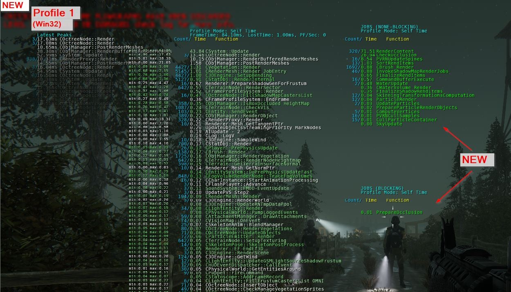
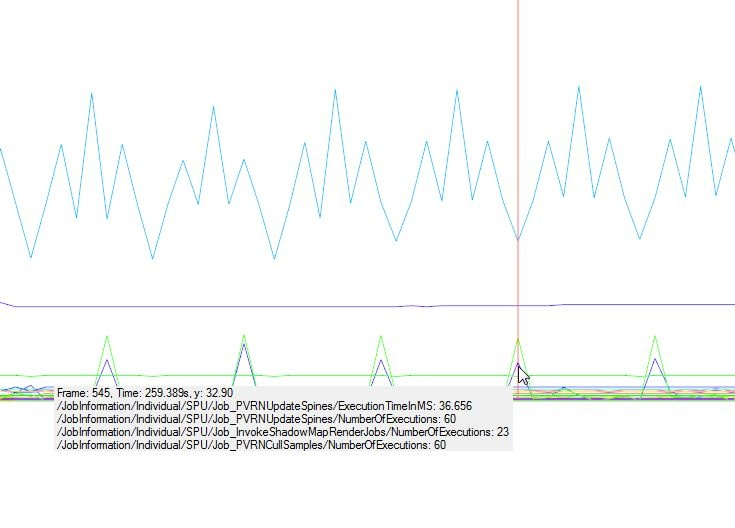
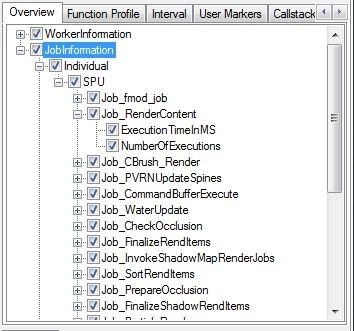
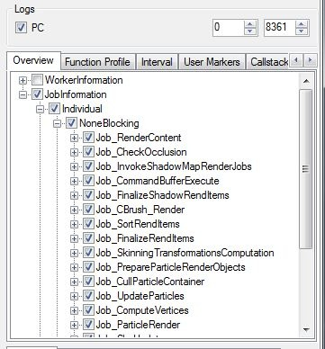
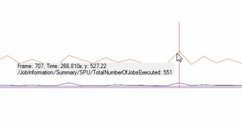
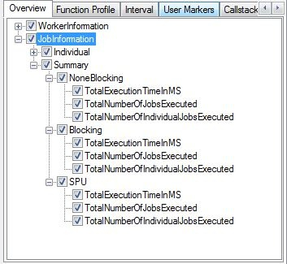
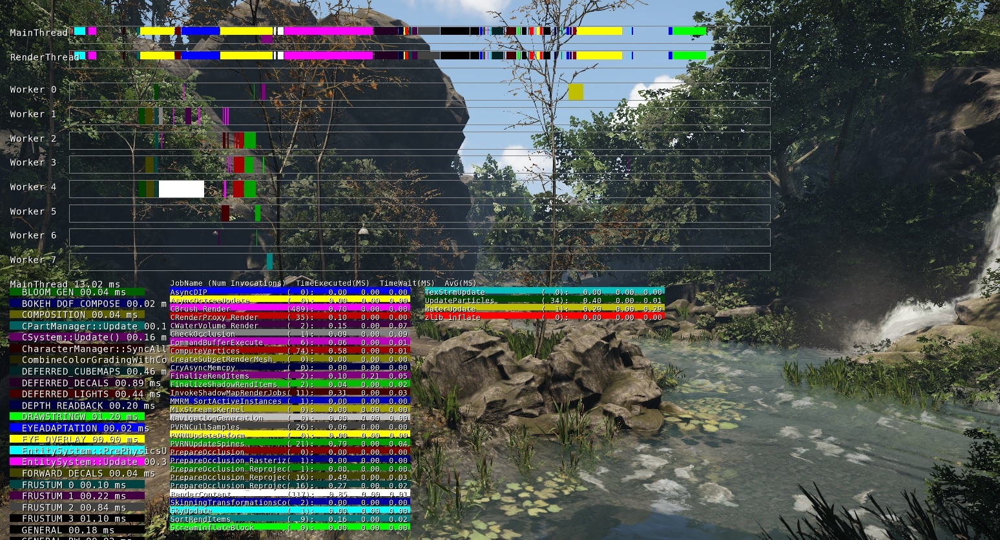

Overview
CryEngine features several methods of analyzing job performance at run-time as well as in offline mode.
- For a quick overview of the current worker load, use the console command Profile 1.
- For a more detailed overview use the Statoscope tool which can be found in the game_branch/Tools folder.
Profile 1
The console command Profile1 displays information of individual jobs and their execution time.
The feature should be used to get a rough overview. For a more detailed per frame analysis of data please refer to using the Statoscope tool.

(Note: Do not worry about the frame timings in this picture. The screenshot was taken in windowed + out of focus mode on PC)
How to use:
- In-game console command: Profile 1
Features:
Job Types:
- None-Blocking
- Blocking
- SPU (PS3 only)
Job title bar:
- Count: The number of executions in the sample frame
- Time_:_ The execution time of the job in the sample frame
- Function_: The job name_
Statoscope
Statoscope offers live as well as offline analysis of data on a per frame basis.
Link to the where more information about the tool can be found.
How to use:
Step 1:
- In the in game console type: e_StatoscopeLogDestination 1
Step2:
- In the console type: e_StatoscopeDataGroups YZ
- DataGroup Y = Job Information Individual
- DataGroup Z = Job Information Summary
- (Note the capital letters)
Step3:
- Start Statoscope
Step4:
- Click File->Connect
Step5:
- Connect to the platform the game is running on
Features:
Job Information Individual:
DataGroup: Y
Individual job stats for the various backend types for a given frame.
Backend Types:
- None-Blocking.
- Blocking.
- SPU.
For each job:
- ExecutionTimeInMs: The total time the job has taken to execute within a frame.
- NumOfExecutions: The total number of times this job was executed on one or several workers within a frame.
 | PS3 Example:  | PC Example:  |
Job Information Summary:
DataGroup: Z
Summary of all job activity for the various backend types for a given frame.
Backend Types:
- None-Blocking
- Blocking
- SPU
For each backend:
- TotalExecutionTimeInMs: Total time spend executing jobs
- TotalNumberOfJobsExecuted: Total number of jobs executed
- TotalNumberOfIndividualJobsExecuted: Total number of individual jobs executed
 |  |
sys_job_system_profiler
This tool visualizes the job activity spread across the the different threads.
sys_job_system_profiler 1
Its broken down into 3 main sections:
- Main execution graph at the top that displays through different colours the jobs currently active and on which thread, Render / Main / Worker 0-7.
- The Main Thread Update in the bottom left
- Overview of the Jobs bottom middle, detailing the number of executions of the jobs, & time taken, waiting & average time in ms.

As you will notice, the execution time of the jobs is very fast, so you can pause the display at anytime (when in-game) with the Scroll Lock Key.
sys_job_system_profiler 2 is just the execution graph by itself.
sys_job_system_filter
You can filter out particular systems from being displayed to clean up the display and make it easier to read.
Eg: So if you were to type... sys_job_system_filter CBrushRender,WaterUpdate
You will remove these from the view. To add them back in, simply remove them from the above line.
More than one job can be filtered by using a comma like the example above.
sys_job_system_max_worker
This sets the number of threads to use for the job system.
- Defaults to 4 on consoles.
- Defaults to 8 threads an PC.
- Set to 0 to create as many threads as cores are available.
sys_job_system_dump_job_list
Print to the console a list of the available "jobs"